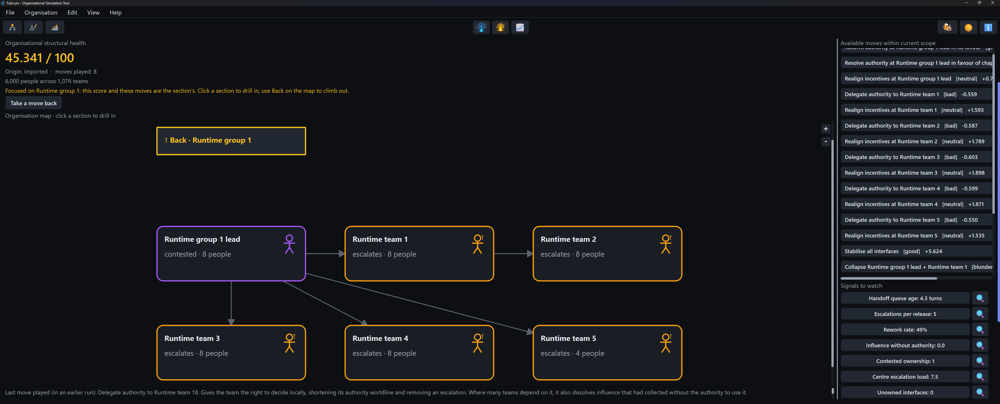
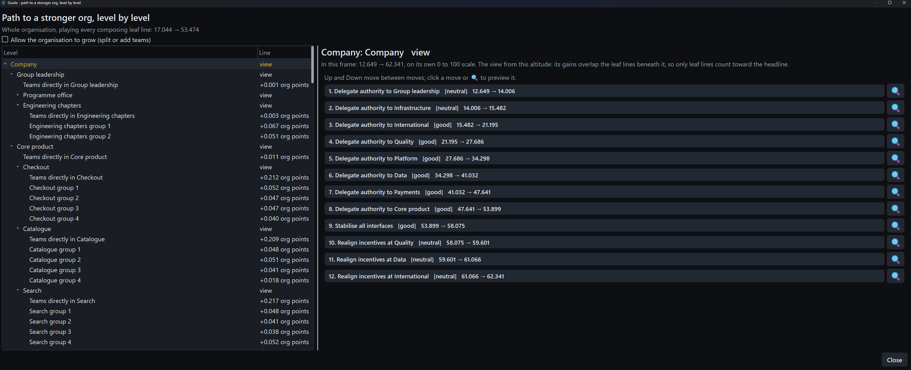
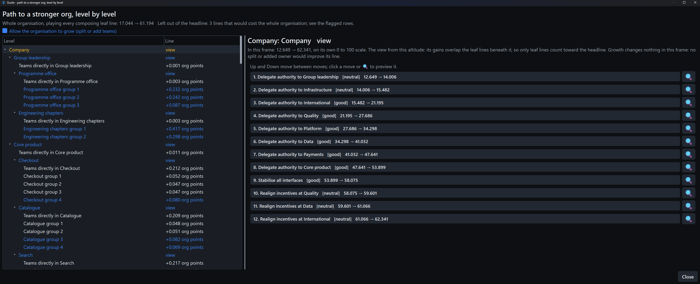

Fulcrum
FulcrumWatch a score climb, move by move
Load an organisation and the board scores its structural health, maps who decides locally against who escalates and lists every move open to you.



From a played line to a plan you can send
One click exports the moves you played as a self-contained HTML report: the health change, before and after maps and a recommendation section addressed to each unit's lead, each move justified by the signal it eased. It lands in your Downloads folder under a name that never overwrites an earlier one and opens straight away for reading. Every move is judged twice: against the whole organisation and (where it acted inside one unit) within that unit's own frame, so a repair that is good where it lives never vanishes into whole-org neutrality. This is a real export, embedded here as shipped.